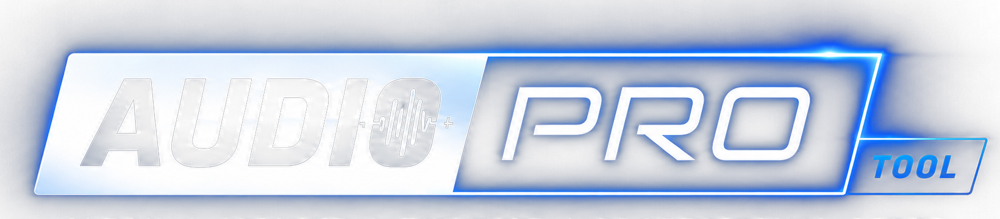

Voice Clean
4-Stem Splitter
AI
Voice Isolation
Studio background noise & echo removal
Voice Restoration
Broadcast clarity & harmonic reconstruction
Restoring studio voice clarity...
0%
AUDIO INSIGHT
Reconstructing harmonic overtones for broadcast clarity...
Select audio/video clip in timeline
4-Stem Neural Separation
Decompose mix into Vocals, Music, Drums & SFX
Separate into 4 Stems
Analyzing mix & isolating stems...
0%
AI DECOMPOSITION
Isolating speech formants, melodic instruments & percussive beats...
00:00
00:00
+ Add All 4 Stems to Comp
Vocals
Dialogue & Speech
S
M
+ Comp
Music
Melody, Synths & Keys
S
M
+ Comp
Drums
Kicks, Snares & Beats
S
M
+ Comp
SFX & Ambience
Room Tone, Foley & Effects
S
M
+ Comp
Failed to process audio.